MP-MLA Platform Operating Manual
Comprehensive Module-by-Module Step-by-Step Operating Guide & Workflow Manual
1. Introduction & Platform Overview
The MP-MLA Constituency Management SaaS Platform is an enterprise public administration suite engineered for Members of Parliament (MP), Members of Legislative Assembly (MLA), secretariat teams, nodal officers, and constituency coordinators.
Platform Feature Modules:
- Master Dashboard & Tenant Provisioning: SaaS tenant onboarding, subscription plan assignment, paywall enforcement, global audit logs, and soft-delete Recycle Bin.
- Executive Command Dashboard: Real-time KPI summary cards, SLA breach countdowns, priority analytics, and quick-action execution shortcuts.
- Grievance & Public Request System: Complaint intake, SLA timers, nodal department routing, automated escalations, proof photo resolution, and constituent feedback.
- Janata Darbar Public Hearings: Session slot creation, walk-in digital token engine, VIP priority queueing, and live verbal order converting into tickets.
- Events & Protocol Scheduler: Constituency public events, team task assignments, VIP guest RSVP tracking, and speech note briefings.
- Meetings & Secretariat Appointments: Departmental review scheduler, Minutes of Meeting (MoM) decision tracking, and visitor QR gate pass check-in/out.
- Voter Portal & Identity Verification: Electoral roll search by EPIC ID, constituent identity verification, household family grouping, and demographic heatmaps.
- Geography, Demographics & Booths: Hierarchy structure (District ➔ Block ➔ Town/Village ➔ Polling Location ➔ Booth / Ward), booth president assignment, and bulk CSV voter imports.
- Public Facilities & Emergency Helplines: Citizen speed-dial directory, facility locator (hospitals, schools, police stations, CSC centers), and public registration requests.
- Infrastructure Projects & Milestones: Sanction orders, contractor assignment, stage-wise 25%/50%/75%/100% milestone photo inspection, and payment releases.
- Funds Ledger & Financial Audit: MPLAD, MLALAD, State & Central fund allocations, installment tracking, Utilization Certificate (UC) vault, and remaining balance ledgers.
- Welfare Schemes & Applications: Scheme catalog setup, criteria eligibility engine, application document intake, and Direct Benefit Transfer (DBT) disbursal tracking.
- CRM Contacts, Cadre & Community Networks: Constituent directory, religious & professional group networks, party worker profiling, and automated birthday/anniversary greetings.
- Website Builder Studio & Domains: Drag-and-drop page builder, public request web forms, custom domain mapping with SSL, and live edge deployment.
- Creative Studio & Social Media: Banner generator for festival/achievement posters, image export, social channel dispatch, and press release archiving.
- Competitor Intelligence & Political Metrics: Opposition profiling, local issue monitoring, campaign promise tracking, and ward counter-strategies.
- Document Vault, Tasks & PDF Reports: Central file storage, internal staff task delegation, and customizable PDF/Excel summary report exports.
2. Platform Architecture & Portals
The platform provides specialized portals tailored to specific administrative roles:
| Portal Name | Target User Roles | Core Workflow Capabilities | Primary Route Path |
|---|---|---|---|
| Master Control Panel | SUPER_ADMIN (SaaS Owner) | Multi-Tenant Provisioning, Subscription Tiers, Paywall Locks, System Backups & Global Audits | /master-dashboard |
| Constituency Secretariat Portal | MLA_MP, OFFICE_STAFF, NODAL_OFFICER | Executive Dashboard, Grievances, Funds, Infrastructure Projects, Events, Schemes, CRM, PR Studio | /dashboard |
| Voter Search & Verification Portal | VOTER_VERIFIER, Field Staff | EPIC Electoral Search, Voter Identity Requests, Household Linking, Ward Demographics | /voter-portal |
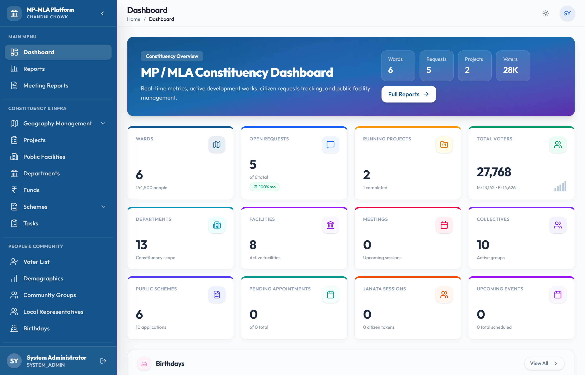
3. User Roles & Security Matrix
Role-Based Access Control (RBAC) enforces granular permissions across all constituency modules:
| User Role | Scope | Grievance Workflow | Voter Roll Access | Funds & Infrastructure | System & Billing |
|---|---|---|---|---|---|
| SUPER_ADMIN | Global SaaS Engine | Full Access across Tenants | Full Access | Full Access | Full Master Control |
| MLA_MP | Single Constituency | Approve, Review & Escalate | View & Analytics | Sanction Projects & Allocations | Constituency Settings |
| OFFICE_STAFF | Single Constituency | Create, Assign & Resolve | Verify Voters & Records | Track Disbursements | No Billing Access |
| NODAL_OFFICER | Assigned Department | Update Status & Upload Proof | View-Only | View Department Projects | No Admin Access |
4. Master Superadmin & Multi-Tenant Setup
Superadmins manage all SaaS constituency accounts from the Master Control Panel at /master-dashboard.
Step-by-Step Tenant Provisioning & Management Workflow:
Access Master Dashboard & Log In
Navigate to /master-dashboard/login. Enter Superadmin credentials. Upon authentication, open the Tenants Directory tab.
Provision New Constituency Account
Click the Add Tenant button. Enter Representative Name (e.g. Hon. Ashok Kumar MP), Designation (Member of Parliament / Member of Legislative Assembly), House (Lok Sabha / Rajya Sabha / Vidhan Sabha), State, District, Subdomain (e.g. indore-south), and Official Email.
Assign Subscription Plan & Initial Admin Credentials
Select Plan Tier (14-Day Free Trial, Pro Plan, Enterprise Plan). System automatically generates the initial MP/MLA Secretariat Admin account and sends a secure invitation link to the representative's email.
Manage Tenant Lifecycle & Feature Flags
Superadmins can enable or disable specific modules per tenant, suspend non-paying accounts, override record limits, and monitor database storage usage.
5. Subscriptions & Paywall Enforcement Rules
The automated billing system handles free trial countdowns, plan renewals, invoicing, and paywall locks at /account/billing.
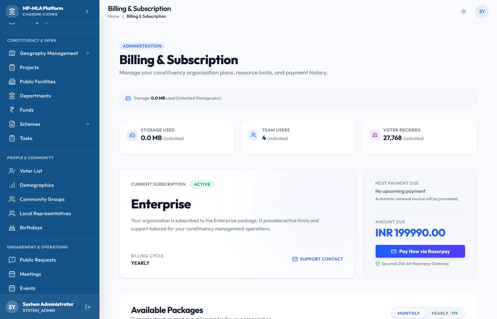
Step-by-Step Billing & Paywall Management Workflow:
View Active Subscription Status & Limits
Navigate to /account/billing. Check trial days remaining, current active quota limits (Voter storage limit, Monthly SMS count, Custom Domains), and billing history.
Select Target Plan & Billing Interval
Click Upgrade Plan or Renew Subscription. Select plan tier (Pro Plan or Enterprise Plan) and billing frequency (Monthly / Annual).
Process Payment & Activation
Complete transaction via integrated payment gateway or offline bank transfer invoice. System updates tenant subscription state instantly upon confirmation.
/account/billing.
6. System Audit Logs & Data Recovery (Recycle Bin)
All system actions, user logins, data modifications, exports, and soft deletions are captured in immutable audit logs at /audit-logs and /recycle-bin.
Step-by-Step Audit & Data Restoration Workflow:
Inspect System Audit Trail
Open /audit-logs. Search activity by User Name, Date Range, IP Address, or Action Type (CREATE, UPDATE, DELETE, EXPORT, LOGIN).
Access Soft-Deleted Recycle Bin
Navigate to /recycle-bin. View soft-deleted records across Grievances, Voter Entries, Infrastructure Projects, and Scheme Applications.
Restore Data or Perform Permanent Purge
Click Restore Record to reinstate deleted item with all child relations intact. Items remain in Recycle Bin for 30 days before permanent system purging.
7. Executive Dashboard Operating Guide
The Executive Dashboard serves as the central command post for the MP or MLA at /dashboard.
Step-by-Step Dashboard Workflow:
Review Live Metric KPI Cards
Analyze key counters: Total Grievances Received, SLA Resolution %, Sanctioned Project Funds, Active Infrastructure Projects, and Verified Voter Count.
Execute Quick Actions from Command Bar
Click shortcut buttons on top: Log Grievance, Sanction Project, Search Voter EPIC, or Issue Janata Darbar Token.
Filter Data by Ward & Date Range
Use top filter dropdowns to dynamically filter dashboard widgets by specific Ward, Polling Booth, or Date Range.
8. Grievances & Public Requests Operating Guide
Constituent complaints follow an SLA-monitored lifecycle to guarantee timely resolution at /grievances and /public-requests/new.
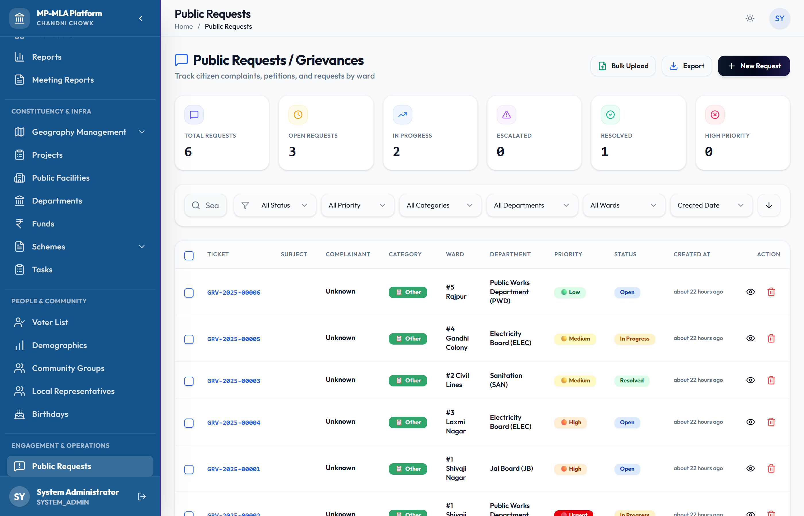
Complete Step-by-Step Grievance Lifecycle Workflow:
Register New Grievance Entry
Go to /grievances ➔ Click New Grievance. Fill Constituent Name, Mobile Number, EPIC Card ID, Ward/Booth, Department (PWD, Electricity Board, Water Supply, Healthcare, Sanitation, Public Transport), and complaint description. Attach supporting document/photo.
Assign Category, Priority & SLA Target
Select Priority Tier: Critical (24h SLA), High (48h SLA), Medium (7 Days SLA), or Low (15 Days SLA). The system automatically sets countdown target date.
Assign Nodal Officer & Dispatch Notification
Assign Nodal Department Officer. The system auto-dispatches an SMS notification to the constituent with reference ticket code (e.g. GRV-2026-089) and notifies nodal officer.
Nodal Officer Action & Proof Document Upload
Nodal officer logs into portal, updates status to In Progress, records field remarks, and uploads completion proof photo/document.
Resolution Sign-Off & Constituent Rating
Secretariat staff verifies completion proof, marks ticket Resolved, and captures constituent satisfaction score (1 to 5 Stars).
9. Janata Darbar Sessions Operating Guide
Streamline public hearing walk-in events at /janata-darbar.
Step-by-Step Janata Darbar Hearing & Token Workflow:
Schedule Janata Darbar Hearing Session
Go to /janata-darbar ➔ Click Schedule Session. Input Session Date, Venue Location, Start Time, Max Token Capacity, and Presiding Officer Name.
Issue Walk-in Digital Token
As citizens arrive, receptionist inputs constituent phone or EPIC ID. System generates sequential token (e.g. JD-042) and dispatches token pass via SMS.
Apply VIP & Medical Priority Tagging
Tag senior citizens, urgent medical requests, or official delegation tokens with Priority Tag to move them ahead in queue.
Record Live Hearing Minutes & Instant Conversion
When token is called into hearing room, secretariat records MP/MLA verbal instructions. Directly convert hearing into an official Grievance Ticket, Project Sanction, or Official Letter on the spot.
Conclude Session & Generate Analytics Summary
Mark token Completed. Upon event end, click Conclude Session to archive full hearing minutes and summary report.
10. Events & Protocol Scheduler Guide
Manage public functions, inauguration ceremonies, rallies, and official protocol events at /events.
Step-by-Step Event Scheduling & Protocol Workflow:
Create Public Event Entry
Go to /events ➔ Click Create Event. Set Title, Category (Inauguration, Public Rally, Inspection, Cultural Event), Date/Time, Venue, Target Attendance, and Budget.
Assign Event Coordinator & Team Tasks
Assign Event Lead, Venue Logistics Manager, VIP Transport Coordinator, and Media Team. Tasks appear on staff task boards.
Manage VIP Guest List & Track RSVP
Add VIP dignitaries and local leaders to guest list. Dispatch invitations and track live RSVP status (Accepted, Declined, Pending).
Upload Speech Notes & Briefing Packets
Attach MP/MLA speech talking points, local ward statistics, key inaugurations list, and media release text.
11. Meetings & Appointments Operating Guide
Organize official secretariat review meetings and visitor entry passes at /meetings and /appointments.
Step-by-Step Meetings & Visitor Pass Workflow:
Schedule Official Secretariat Meeting
Go to /meetings ➔ Click New Meeting. Set Title, Department, Date/Time, Venue/Link, Agenda, and Required Attendees.
Record Minutes of Meeting (MoM) & Action Items
Input MoM notes during meeting. Assign actionable items to staff with target completion dates and track completion.
Request Visitor Appointment Pass
Go to /appointments. Constituent or visitor submits request (Visitor Name, Organization, Purpose of Visit, Preferred Slot).
Pass Approval & QR Gate Check-in
Secretariat approves slot. System sends digital QR Entry Pass to visitor mobile. Security scans QR pass at gate upon arrival and exit.
12. Voter Portal & Identity Verification Operating Guide
The Voter Portal at /voter-portal, /voter-verification, and /voter-list provides complete electoral roll search, verification, and family grouping.
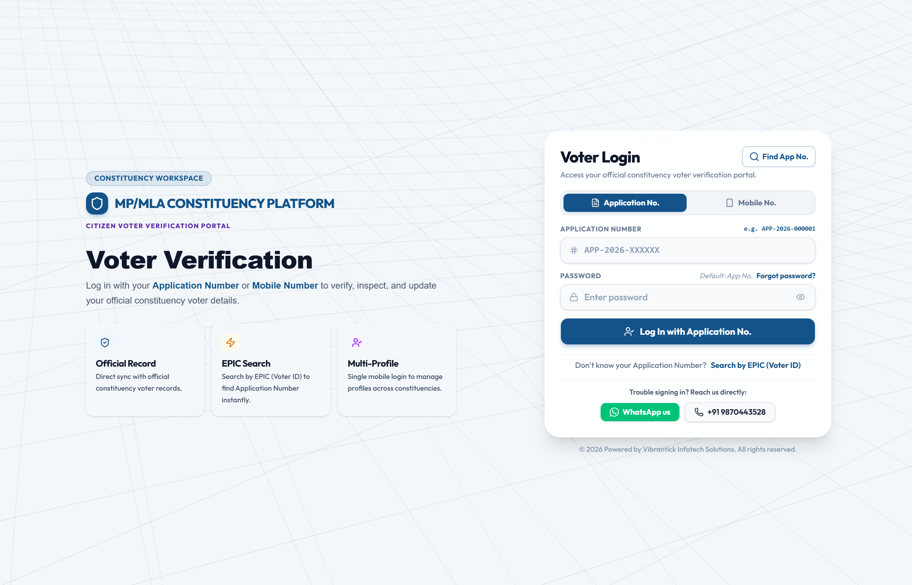
Complete Step-by-Step Voter Search & Verification Workflow:
Electoral Search by EPIC Card or Name
Go to /voter-portal. Input EPIC Card Number (e.g. ABC1234567) or constituent name. System fetches booth number, serial number, polling station, and voter details.
Household Family Grouping
Link family members residing in the same household under a single Family Group ID to view complete family voting records together.
Process Voter Verification Requests
Go to /voter-verification. Review new voter registration or address correction requests. Verify ID documents and mark status Verified, Pending Info, or Rejected.
Demographic Analytics & Ward Heatmaps
Open /demographics. Analyze Age Distribution charts (18-25, 26-35, 36-50, 50+), Gender Ratio, and Ward-wise Voter Density heatmaps.
13. Demographics, Wards & Booths Hierarchy Guide
Manage constituency territorial structure and voting day booth arrangements at /geography and /geography/bulk-import.
Constituency Territory Hierarchy:
Constituency ➔ District ➔ Block ➔ Town/Village ➔ Polling Location ➔ Booth / Ward
Step-by-Step Geography & Booth Setup Workflow:
Setup Territory Hierarchy
Go to /geography. Define Districts, Blocks, Villages/Towns, Polling Stations, and Wards.
Assign Polling Booth Committee & In-Charges
Select specific Polling Booth. Assign Booth President, Committee Members, Page Pramukhs, and save contact numbers.
Booth Facility Audit & Voting Day Logistics
Log facility status (Ramps, Electricity, Water, Security) and allocate voting day arrangements budget (Tents, Chairs, Refreshments, Banners).
Bulk Electoral Roll Data Import (CSV/Excel)
Go to /geography/bulk-import. Upload official voter list CSV file, map fields (EPIC ID, Name, Relative, Age, Gender, House No, Booth No), validate schema, and import data into system database.
14. Public Facilities, Helplines & Information Hub
Manage emergency contacts, speed-dial numbers, and government facility locator at /helplines and /public-facilities.
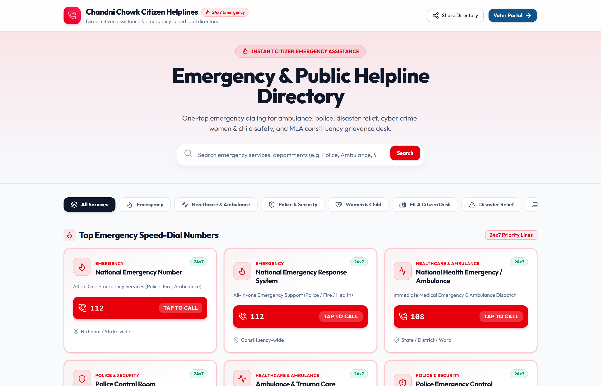
Step-by-Step Facilities & Helplines Workflow:
Add Public Facility Entry
Go to /public-facilities ➔ Click Add Facility. Select Category (Hospital, School, Police Station, CSC Center, Temple, Mosque, Park, Community Hall), enter Name, Ward, Phone, Address, and GPS location.
Configure Emergency Speed-Dial Helplines
Go to /helplines. Add emergency contacts (Police Control, Ambulance, Fire Brigade, Electricity Helpline, Water Board, Women Security).
Review Citizen Facility Registration Requests
Review public submissions from /register-public-facility, verify facility details, and approve into public directory.
15. Infrastructure Projects Operating Guide
Monitor constituency development works and stage-wise completion progress at /projects.
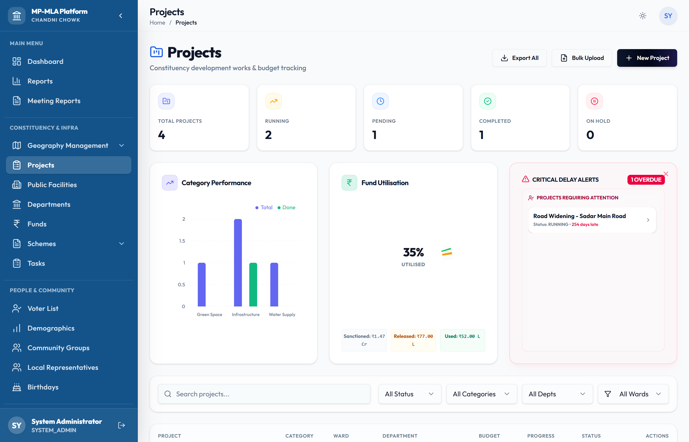
Complete Step-by-Step Infrastructure Project Management Workflow:
Create Project Entry & Sanction Order
Go to /projects ➔ Click Add Project. Enter Project Title, Category (Road Construction, Solar Streetlight, Community Center, School Building, Water Supply Pipeline), Estimated Budget, Ward, Sanction Date, and Executive Agency (PWD, RES, Municipal Corp).
Assign Contractor & Issue Work Order
Upload Administrative Sanction (AS) & Technical Sanction (TS) copies. Assign awarded Contractor Name, License Number, Work Order Date, and Target Completion Date.
Stage-wise Milestone Photo Verification
Inspect and verify site progress across 4 inspection milestones: 25% Stage (Foundation), 50% Stage (Structural), 75% Stage (Finishing), and 100% Stage (Completion). Upload geo-tagged site photos and inspection notes for each stage.
Fund Disbursement & Final Sign-Off
Release installment funds against verified milestone photos. Upon 100% stage sign-off, issue Final Completion Certificate and mark project Completed.
16. Funds & Financial Ledger Audit Guide
Track annual fund allocations, released installments, and financial balance ledgers at /funds and /funds/overview.
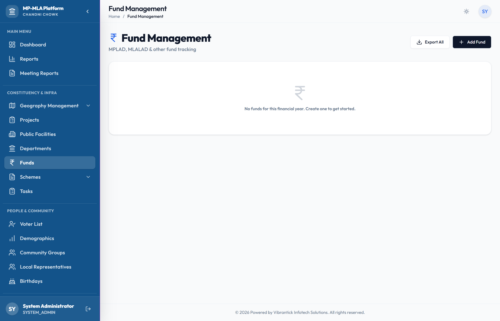
Step-by-Step Fund Management & Financial Audit Workflow:
Define Fund Allocation Source
Go to /funds ➔ Click Add Fund Head. Create Fund Category (MPLAD FY 2026-27, MLALAD Annual Fund, State Special Grant, CSR Fund) and enter Total Allocation Amount.
Record Released Installments
Enter installment release orders received from Treasury/Collectorate (Installment Number, Sanction Date, Amount Released, UTR Reference Code).
Upload Utilization Certificates (UC Vault)
Upload signed Utilization Certificates (UC) issued by Executive Engineers. System tracks pending UCs required before next installment release.
Audit Head-wise Sector Balance Ledger
View live sector balance ledger (Education, Health, Roads, Water, Social Welfare) showing Total Allocated vs Sanctioned Works vs Disbursed vs Remaining Balance.
17. Welfare Schemes & Applications Guide
Manage welfare scheme catalog, constituent eligibility matching, and benefit disbursal at /schemes and /schemes/applications.
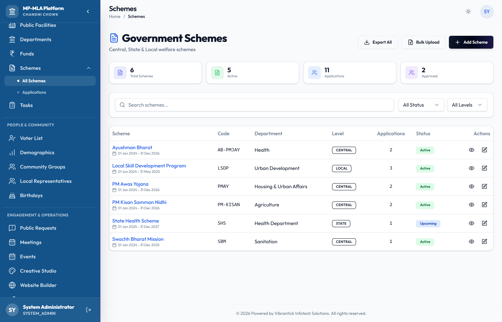
Complete Step-by-Step Welfare Schemes Workflow:
Add Scheme Entry & Eligibility Rules
Go to /schemes ➔ Click Add Scheme. Enter Scheme Name, Sponsoring Body (Central / State), Financial Benefit Amount, Description, and required documents. Set Eligibility Criteria (Min/Max Age, Income Cap, Gender, Social Category).
Run Automated Constituent Eligibility Match
Select constituent profile or search criteria. System automatically matches criteria against active schemes and highlights eligible benefits.
Log Scheme Application & Document Intake
Go to /schemes/applications. Log new application, upload applicant documents (Aadhaar, Ration Card, Bank Passbook, Income Certificate), and assign verification officer.
Approve Application & Track DBT Disbursal
Track status (Submitted ➔ Under Verification ➔ Approved ➔ Disbursed). Record Direct Benefit Transfer (DBT) payment transaction reference ID.
18. CRM Contacts, Community Groups & Party Leaders Guide
Manage constituency stakeholders, religious/professional networks, and party cadre at /crm/contacts, /community, and /leaders.
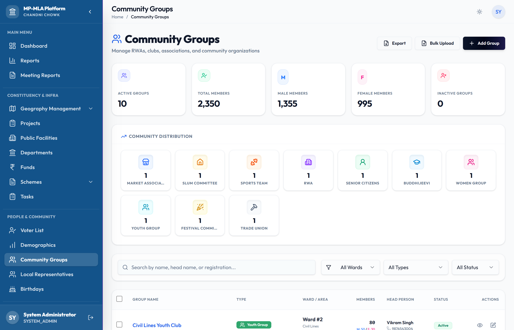
Step-by-Step CRM & Community Network Workflow:
Add Constituent CRM Contact
Go to /crm/contacts ➔ Click Add Contact. Enter Name, Mobile, Email, Ward/Booth, Address, Occupation, Political Inclination rating, and past interaction history.
Create & Manage Community Groups
Go to /community. Create Religious Groups (Temples, Mosques, Gurudwaras, Churches), Professional Associations (Teachers, Doctors, Engineers, Lawyers), and Trade Unions. Add group members.
Profile Party Cadre & Leaders Directory
Go to /leaders. Profile Party Workers, Mandal Presidents, Booth In-Charges, Youth Wing Leaders, and map territorial responsibilities.
Automated Birthday & Festival Greetings Dispatch
Go to /leaders/birthdays. View daily/weekly upcoming constituent & leader birthdays/anniversaries. Dispatch 1-click automated SMS/WhatsApp greetings.
19. Website Builder Studio & Domains Guide
Create and host official constituency web portals at /website/builder and /website/domains.
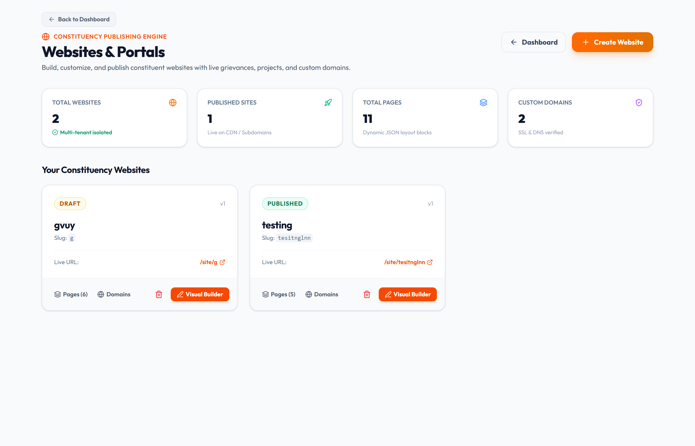
Complete Step-by-Step Website Builder Workflow:
Customize Homepage & Layout Template
Go to /website/builder. Select layout template, configure header banner, MP/MLA bio, achievement statistics counter, and news marquee.
Add Pages & Public Web Forms
Create pages (About Representative, Vision, Project Highlights, Public Grievance Form, Scheme Application Form).
Map Custom Subdomain & SSL Routing
Go to /website/domains. Configure custom domain (e.g. ashokkumar-mp.in), auto-provision SSL security certificate.
Publish & Track Live Deployment Logs
Click Publish Website. System builds edge assets and deploys site. Monitor live deployment status logs at /website/deployments.
21. Competitors Analysis Operating Guide
Track opposition political activities, statements, and ward sentiment at /competitors.
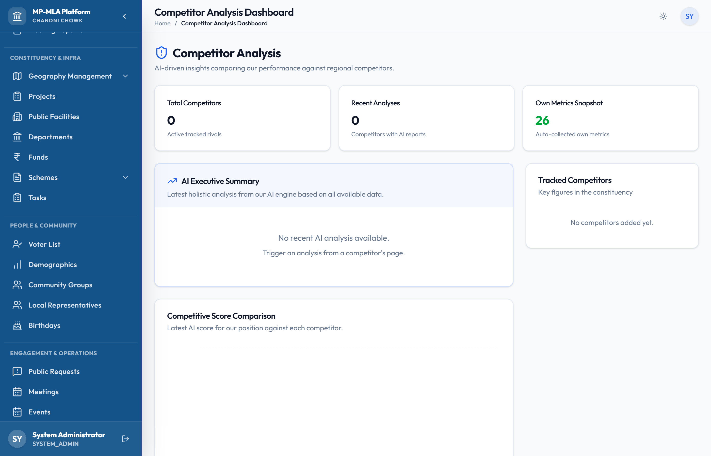
Step-by-Step Political Intelligence Workflow:
Profile Opposition Leaders & Rivals
Go to /competitors ➔ Click Add Competitor. Profile rival candidate/leader details, party affiliation, stronghold wards, voter influence estimate, and social media handles.
Monitor Campaign Rallies & Public Statements
Record opposition rallies, public promises, press statements, and media coverage.
Map Ward Grievances & Log Counter-Strategy
Track local issues exploited by opposition in specific wards. Log counter-strategy development tasks and targeted constituent outreach plans.
22. Document Vault & PDF Reports Guide
Manage central documents, internal staff tasks, and PDF/Excel reports at /documents, /tasks, and /reports/pdf.
Step-by-Step Document Vault & PDF Export Workflow:
Upload to Central Document Vault
Go to /documents ➔ Click Upload Document. Upload sanction letters, government circulars, gazette notifications, and parliamentary questions. Tag by category.
Create & Delegate Internal Staff Tasks
Go to /tasks ➔ Click Create Task. Assign task owner, set priority (Urgent, High, Normal), link related Grievance/Project/Event, set due date, and track status.
Generate Formal PDF & Excel Reports
Go to /reports/pdf or /reports/excel. Select target dataset (Grievances, Infrastructure Projects, Funds Ledger, Welfare Schemes, Voter List), apply date/ward filters, and click Generate Report to download formal summary files.
23. Frequently Asked Questions & Support
Q1: How do I search for a voter by EPIC card in the Voter Portal?
Navigate to /voter-portal from the sidebar. Enter the constituent EPIC Card number (e.g. ABC1234567) or constituent name in the search bar and press Enter.
Q2: Can I export project sanction details and fund expenditure to PDF?
Yes. Go to /reports/pdf or open /projects / /funds and click Export PDF Report to generate formal summary documents for official meetings.
Q3: What happens if a free trial expires without upgrading?
The system activates a subscription paywall banner. Read access remains fully available for existing records, while write operations (creating new grievances, voter roll edits, project sanctioning) are locked until plan renewal at /account/billing.
Q4: How do I restore an accidentally deleted grievance or project record?
Navigate to /recycle-bin from the sidebar. Locate the soft-deleted item and click Restore Record. The item will be instantly reinstated with all original properties and relationships intact.
Q5: How do I verify milestone progress photos for an infrastructure project?
Open /projects, select the project entry, navigate to the Milestones tab, select the milestone stage (25%, 50%, 75%, 100%), upload site inspection photos, and click Approve Milestone.